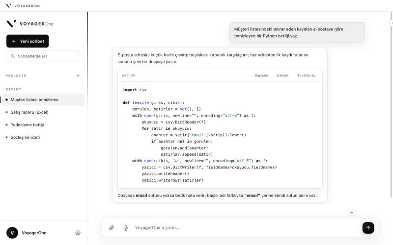

VoyagerOne; Windows, macOS ve Linux için geliştirilmiş bir yapay zekâ uygulamasıdır. Metin yazar, belge hazırlar, kod çalıştırır. Yerel modelle internet bağlantısı olmadan kullanılabilir.
VoyagerOne, yapay zekâ modelleriyle çalışmak için tek bir masaüstü uygulaması sunar. Uygulamada sohbet edebilir, Word, Excel, PowerPoint ve PDF dosyası hazırlayabilir, bilgisayarınızdaki dosyaları okuyup düzenleyebilir, Python ve JavaScript kodu çalıştırabilirsiniz.
Kullanacağınız modeli siz seçersiniz: Ollama ile bilgisayarınızda çalışan yerel bir model ya da kendi API anahtarınızla Google Gemini, OpenAI veya Anthropic. Sohbetler, projeler ve dosyalar yalnızca bilgisayarınızda saklanır.
Ollama kuruluysa model bilgisayarınızda çalışır ve mesajlarınız cihazdan çıkmaz. İsterseniz kendi Gemini, OpenAI veya Anthropic anahtarınızı girebilirsiniz.
Karmaşık işlerde planlama, mühendislik ve kalite ajanları sırayla çalışır (toplam 72 ajan). Yanıt beş ayrı denetimden geçer.
Word, Excel, PowerPoint, PDF, SVG ve 3D model dosyalarını sohbet içinden oluşturur.
Terminal komutu çalıştırır; dosya okur, yazar, düzenler ve arar. Her işlemden önce işletim sisteminin onay penceresi açılır.
Python ve JavaScript kodu ayrı ve sınırlandırılmış bir süreçte çalışır. Paket kurulumu yapılır, çıktı ekranda gösterilir.
Mikrofona konuşursunuz; konuşma tanıma bilgisayarınızda çalışır. Ses kaydı hiçbir yere gönderilmez.
Aşağıdakiler VoyagerOne'ın günlük işlerde en çok kullanıldığı alanlardır.
Konuyu yazarsınız; Excel tablosu, Word raporu ve PowerPoint sunumu bilgisayarınızdaki klasöre kaydedilir.
Kod yazar, hata ayıklar, çalıştırır ve proje dosyalarını düzenler. Python ve JavaScript doğrudan uygulamada denenebilir.
Bir klasördeki PDF, Word ve metin dosyalarını okuyup özetler, karşılaştırır veya başka biçime çevirir.
Sözleşme, müşteri verisi veya iç yazışma gibi belgeler yerel modelle işlenir; hiçbir şey bilgisayardan çıkmaz.
Web araması ve sayfa okuma yalnızca siz izin verdiğinizde çalışır. Sonuçlar kaynaklarıyla birlikte sohbete eklenir.
Mikrofona konuşursunuz, metin sohbete yazılır. Konuşma tanıma bilgisayarınızda çalışır.

VoyagerOne yerel modelleri Ollama üzerinden çalıştırır. Ollama'nın desteklediği modeller (Llama, Qwen, Gemma, Mistral ve diğerleri) uygulamada listelenir ve seçilebilir; GGUF dosyaları Ollama'ya aktarıldığında kullanılabilir. Uygulama bilgisayarınızın RAM miktarına bakıp uygun model boyutunu önerir. Önerilen başlangıç modeli qwen2.5-coder'dır.
| Katman | Model boyutu | En az RAM | İndirme boyutu | Uygun işler |
|---|---|---|---|---|
| Nano | 3B | 8 GB'ın altı | 2,2 GB | Eski makineler ve dizüstüler: kısa sohbet, küçük düzeltmeler |
| Lite | 7–8B | 8 GB | 4,7 GB | Günlük kullanım, tek dosyalık işler |
| Core | 14B | 16 GB | 9 GB | Çok dosyalı görevler, kapsamlı düzenleme |
| Pro | 32B | 32 GB | 19 GB | Mimari kararlar, uçtan uca uygulama üretimi |
| Max | 70B | 64 GB | 40 GB | Uzun bağlam, derin muhakeme |
| Ultra | 120B (MoE) | 128 GB | 65 GB | İş istasyonu: yoğun paralel çalışma |
Boyutlar Q4_K_M niceleme içindir. Bağlam penceresi, en küçük katmanda 8 bin, en büyük katmanlarda 131 bin token'dır. GPU zorunlu değildir: Ollama uyumlu bir GPU bulursa kullanır, bulamazsa işlemciyle çalışır ve yanıtlar daha yavaş olur.
Aylık 20 dolarlık bir yapay zekâ aboneliği, 8. ayda VoyagerOne Pro'nun tek seferlik fiyatını ($149) geçer. 36 ayın sonunda aradaki fark 571 dolardır.
| Aylık abonelik (örnek) | VoyagerOne Pro | |
|---|---|---|
| Ödeme | Her ay | Tek seferlik |
| 3 yıllık maliyet (aylık $20 varsayımıyla) | $720 | $149 |
| Sohbet ve dosyaların yeri | Sağlayıcının sunucusu | Bilgisayarınız |
| İnternetsiz kullanım | Yok | Var (yerel modelle) |
| Belge çıktısı | Kopyala ve yapıştır | Word, Excel, PowerPoint, PDF dosyası |
Bulut modeli kullanırsanız sağlayıcının API ücreti ayrıca uygulanır. Yerel modelde ek ücret yoktur.
Kurulum sihirbazı gerekli bileşenleri indirir ve mikrofonu test eder.
Ollama kuruluysa yerel modeller otomatik bulunur. Bulut modeli için kendi API anahtarınızı girersiniz.
Lisans satın aldığınızda anahtarı Ayarlar → Lisans bölümüne girmeniz yeterlidir.
Tüm planlar tek seferlik ödemedir ve süresizdir. Vergi, ödeme sayfasında bulunduğunuz ülkeye göre eklenir. Ödemeden sonra lisans anahtarı e-postanıza gönderilir.
Pro
Team
Company
Bir yapay zekâ uygulaması dosyalarınıza eriştiği için sınırlarını açıkça belirtiyoruz.
Komut çalıştırma, dosya yazma ve silme gibi işlemlerden önce işletim sisteminin onay penceresi açılır.
.env, özel anahtar, parola ve kabuk geçmişi gibi dosyalar modele okutulmaz. Uygulamanın kendi ayar klasörü de bu korumaya dahildir.
Sistemi veya dosyalarınızı toplu silebilecek komutlar çalıştırılmadan önce durdurulur. Zararsız komutlar etkilenmez.
İnternete çıkan her araç, siz açmadan çalışmaz. Yerel modelde mesajlarınız ağa hiç gönderilmez.
Gemini, OpenAI veya Anthropic API anahtarlarınız yalnızca bilgisayarınızda saklanır; biz görmeyiz.
Güncellemeler 1.x boyunca lisansa dahildir. Uygulama açılışta yeni sürümü kontrol eder.
Durdur düğmesi model çağrısını anında keser. Yerel modellerde bağlam penceresi isteğe göre ayarlanır, böylece talimatlar kırpılmaz. Gemini için güncel model seçimi ve hız sınırında otomatik yeniden deneme eklendi. Komut ve gizli dosya filtreleri sıkılaştırıldı, hata mesajları anlaşılır hale getirildi, sohbet araması hızlandı.
Yeni arayüz ve beyaz tema, düşünme adımlarını gösteren alan, harcanan token sayaçları, yerleşik tarayıcı aracı, genişletilmiş sistem yönergeleri, sohbet değiştirirken işin kesilmesi hatasının düzeltilmesi.
Bulut API ile de VoyagerOne olarak konuşur; karşılaştırma sorularında uygulamayı anlatır. Windows ve Linux paketleri şu an bu sürümdedir.
Sohbetler, projeler ve oluşturduğunuz dosyalar yalnızca bilgisayarınızda saklanır. Yerel model (Ollama) kullanırsanız mesajlarınız cihazdan çıkmaz. Bulut sağlayıcı seçerseniz mesajlar yanıt üretilmesi için o sağlayıcıya gönderilir; uygulama bunu açıkça belirtir.
Ödeme tamamlandığında anahtar ödeme sayfasında gösterilir ve e-postanıza gönderilir. VoyagerOne'da Ayarlar → Lisans bölümüne satın alma e-postanızı ve anahtarı girip Etkinleştir düğmesine basın.
Pro lisansı tek kullanıcı içindir. İlk etkinleştirme için internet bağlantısı gerekir, sonrasında uygulama çevrimdışı çalışır. Team ve Company planlarında koltuk sayısı kadar kullanıcı tanımlanır.
Evet. Ollama ile yerel model kullanıldığında sohbet, belge üretimi ve sesle yazdırma çevrimdışı çalışır. İnternet yalnızca ilk kurulumda, bulut modeli kullanıldığında ve web araması açıkken gerekir.
Uygulama henüz Apple tarafından imzalanmamıştır. Sistem Ayarları → Gizlilik ve Güvenlik bölümünde “Yine de Aç” düğmesine basmanız yeterlidir. Bu işlem bir kez yapılır.
Yanıtlar otomatik üretilir ve hatalı olabilir. Önemli kararlardan önce kontrol edin. Komut çalıştırma ve dosya değiştirme gibi işlemlerde her seferinde onayınız istenir.
Hayır. Lisans süresizdir ve 1.x sürüm güncellemeleri ücretsizdir. Uygulama açılışta yeni sürümü kontrol eder.
Satın almadan önce uygulamayı 7 gün boyunca ücretsiz ve tam sürüm deneyebilirsiniz. Dijital ürünlerde, lisans anahtarı teslim edildikten sonra yasal cayma hakkı kullanılamaz; anahtar teslim edilmeden yapılan iptallerde ödenen tutar tam iade edilir. Lisansın kullanımını engelleyen bir ayıp varsa düzeltme sunulur, çözülemezse bedel iade edilir. Ayrıntılar Satış Koşulları sayfasındadır.
Ollama, yapay zekâ modellerini bilgisayarınızda çalıştıran ücretsiz bir programdır. Yerel ve çevrimdışı kullanım için gereklidir. Yalnızca bulut modeli kullanacaksanız kurmanız gerekmez.
Kendi sağlayıcınıza (Google, OpenAI, Anthropic). VoyagerOne bu kullanımdan komisyon almaz; yalnızca uygulama lisansı için ödeme yaparsınız.
macOS sürümü 1.0.9'dur. Windows ve Linux paketleri 1.0.3'tür ve yeni sürüm hazırlandıkça güncellenir. İşlevlerin tümü her platformda vardır, güncel olanlar macOS'ta daha önce çıkar.
Word (.docx), Excel (.xlsx), PowerPoint (.pptx), PDF, SVG ve 3D model dosyaları. Ayrıca metin, kod ve veri dosyalarını okuyup düzenleyebilir.
Ne yaptığınızı ve gördüğünüz hata iletisini e-posta ile gönderin. Sürüm numarası Ayarlar bölümünde yazar. Hatalar sonraki güncellemede düzeltilir.